here::here("code", "_common.R") |>
source()
# Load packages
if (!requireNamespace("pacman")) install.packages("pacman")
pacman::p_load(cmdstanr, posterior, bayestestR)59 Inferenza bayesiana su una media
In questo capitolo imparerai a
- fare inferenza sulla media di un campione.
Prerequisiti
59.1 Preparazione del Notebook
59.2 Introduzione
L’obiettivo principale di questo capitolo è esaminare un contesto che abbiamo già preso in considerazione in precedenza: ci troviamo di fronte a un campione di dati misurati su una scala a intervalli o rapporti e desideriamo effettuare inferenze sulla media della popolazione da cui il campione è stato estratto. Tuttavia, anziché procedere con una derivazione analitica della distribuzione a posteriori della media della popolazione, in questo caso utilizzeremo i metodi MCMC con Stan.
59.3 Il modello Normale
I priori coniugati Normali di una Normale non richiedono l’approssimazione numerica ottenuta mediante metodi MCMC. In questo capitolo, tuttavia, ripetiamo l’esercizio descritto nel Capitolo 46 usando Stan.
59.3.1 Un esempio concreto
Per applicare il modello Normale, utilizzeremo i dati del censimento parziale dell’area di Dobe dei !Kung San, raccolti attraverso interviste condotte da Nancy Howell alla fine degli anni ’60. I !Kung San sono una suddivisione della popolazione San, che vive nel deserto del Kalahari, tra Namibia, Botswana e Angola, e mantengono un’economia basata su caccia e raccolta. Riprodurremo l’analisi descritta da McElreath (2020), esaminando unicamente i valori dell’altezza di individui di età superiore ai 18 anni.
Il campione include 352 osservazioni:
length(df$height)
#> [1] 352ggplot(df, aes(x = height)) +
geom_histogram(binwidth = 5, color = "black", fill = "lightgray") +
labs(title = "Istogramma di Height", x = "Altezza (cm)", y = "Frequenza")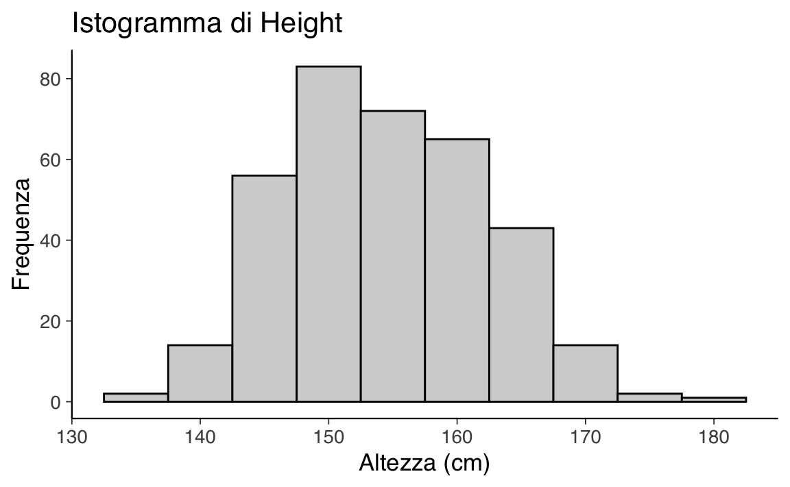
La media dei valori dell’altezza nel campione è:
mean(df$height)
#> [1] 155con una deviazione standard pari a:
sd(df$height)
#> [1] 7.7459.3.2 Modello di Base
Impostiamo una distribuzione a priori \(\mathcal{N}(181, 30)\) per il parametro \(\mu\) e una distribuzione a priori \(\mathcal{N}(0, 20)\) per il parametro \(\sigma\). Seguendo McElreath (2020), ho impostato la distribuzione a priori per \(\mu\) sul valore della mia altezza, per incorporare nel modello le mie conoscenze precedenti rispetto ai valori dell’altezza.
Pertanto, il modello Normale si definisce nel modo seguente:
\[ \begin{align} Y_i &\sim \mathcal{N}(\mu, \sigma) \notag\\ \mu &\sim \mathcal{N}(181, 30) \notag\\ \sigma &\sim \mathcal{N}(0, 20) \notag \end{align} \]
Con questa specifica del modello:
- La variabile casuale \(Y_i\) segue una distribuzione normale con parametri \(\mu\) e \(\sigma\).
- Il parametro \(\mu\) ha una distribuzione a priori normale con media 181 e deviazione standard 30.
- Il parametro \(\sigma\) ha una distribuzione a priori normale con deviazione standard 20, troncata inferiormente a 0.
Per \(\sigma\), la normale troncata con deviazione standard pari a 20 permette una grande variabilità, garantendo valori positivi per la deviazione standard della distribuzione normale di \(Y_i\). I parametri \(\mu\) e \(\sigma\) sono sconosciuti e rappresentano l’oggetto dell’inferenza.
# Path to the Stan file
stan_file <- here::here("stan", "gaussian_height.stan")
# Create a CmdStanModel object
mod <- cmdstan_model(stan_file)mod$print()
#> data {
#> int<lower=1> N;
#> vector[N] y;
#> }
#> parameters {
#> real mu;
#> real<lower=0> sigma;
#> }
#> model {
#> y ~ normal(mu, sigma);
#> sigma ~ normal(0, 20);
#> mu ~ normal(181, 30);
#> }Creaiamo un dizionario con i dati in formato appropriato per Stan:
Eseguiamo il campionamento:
fit <- mod$sample(
data = stan_data,
seed = 123,
chains = 4,
parallel_chains = 4,
iter_sampling = 2000,
iter_warmup = 2000,
show_messages = FALSE
)Esaminiamo le distribuzioni a posteriori dei due parametri oggetto dell’inferenza insieme alle loro tracce (cioè i vettori dei campioni dei parametri \(\mu\) e \(\sigma\) prodotti dalla procedura di campionamento MCMC) mediante un trace plot .
mcmc_trace(fit$draws(c("mu", "sigma")))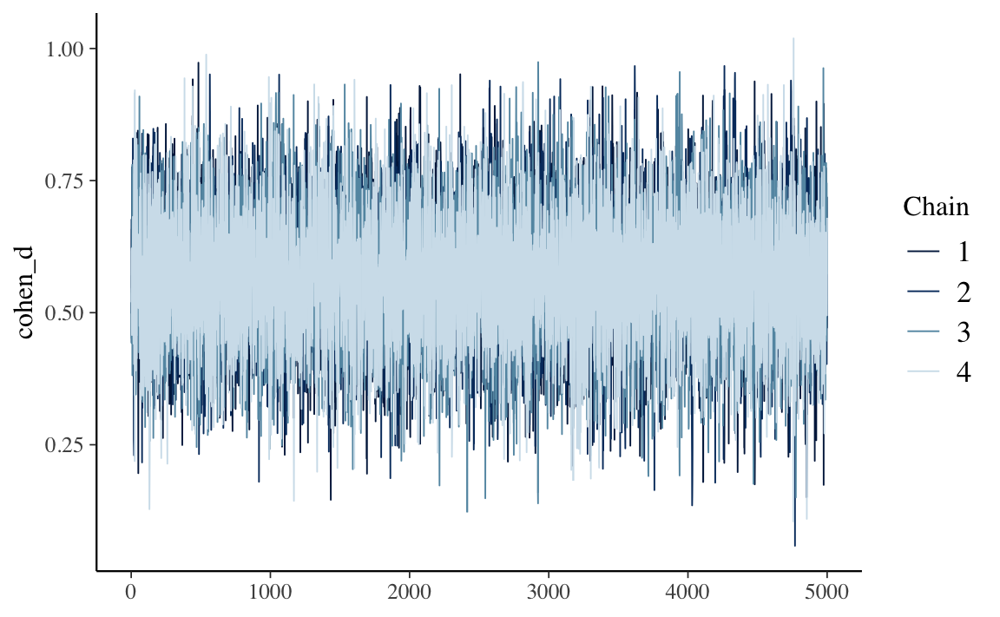
Gli istogrammi delle distribuzioni a posteriori si ottengono nel modo seguente:
mcmc_hist(fit$draws(c("mu", "sigma")))
#> `stat_bin()` using `bins = 30`. Pick better value with `binwidth`.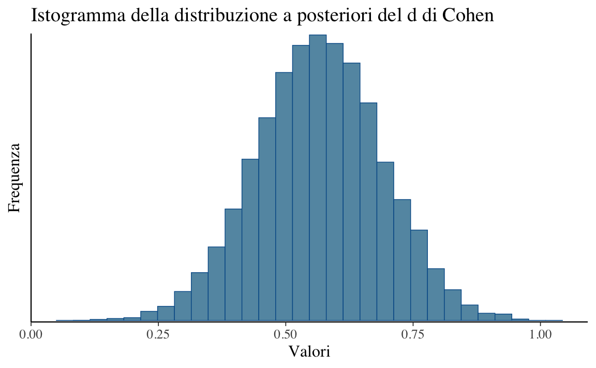
Una sintesi delle distribuzioni a posteriori dei parametri si ottiene nel modo seguente.
fit$summary(c("mu", "sigma"))
#> # A tibble: 2 × 10
#> variable mean median sd mad q5 q95 rhat ess_bulk
#> <chr> <dbl> <dbl> <dbl> <dbl> <dbl> <dbl> <dbl> <dbl>
#> 1 mu 155. 155. 0.421 0.415 154. 155. 1.00 6854.
#> 2 sigma 7.77 7.76 0.295 0.290 7.31 8.27 1.00 6442.
#> # ℹ 1 more variable: ess_tail <dbl>59.4 Parametrizzazione Non Centrata
Nella versione precedente del modello Normale abbiamo specificato le distribuzioni a priori per i parametri oggetto dell’inferenza (\(\mu\) e \(\sigma\)) sulla scala dei dati grezzi osservati, i quali hanno una media di 154.6 e una deviazione standard di 7.7. Sul parametro \(\mu\) abbiamo imposto una distribuzione a priori normale con media 181 e deviazione standard 30, e sul parametro \(\sigma\) abbiamo imposto una distribuzione a priori normale con media 0 e deviazione standard 20. Queste distribuzioni a priori sono specifiche per ciascun particolare campione che possiamo osservare.
È possibile usare un approccio diverso, che consente di definire delle distribuzioni a priori sui parametri che sono indipendenti dal particolare campione che osserviamo. Questa procedura è chiamata “parametrizzazione non centrata” (non-centered parametrization). In questo modello, utilizziamo variabili latenti \(\mu_{\text{raw}}\) e \(\sigma_{\text{raw}}\), che seguono una distribuzione normale standard:
\[ \begin{align} \mu_{\text{raw}} &\sim \mathcal{N}(0, 1) \notag\\ \sigma_{\text{raw}} &\sim \mathcal{N}(0, 1) \notag \end{align} \]
Queste variabili vengono poi trasformate per ottenere i parametri \(\mu\) e \(\sigma\) sulla scala originale:
\[ \begin{align} \mu &= y_{\text{mean}} + y_{\text{sd}} \cdot \mu_{\text{raw}} \notag\\ \sigma &= y_{\text{sd}} \cdot \sigma_{\text{raw}} \notag \end{align} \]
dove:
- \(y_{\text{mean}}\) è la media dei dati osservati \(y\).
- \(y_{\text{sd}}\) è la deviazione standard dei dati osservati \(y\).
Di seguito è riportato il codice Stan per questo modello con la parametrizzazione non centrata:
# Path to the Stan file
stan_file <- here::here("stan", "gaussian_ncp.stan")
# Create a CmdStanModel object
mod_ncp <- cmdstan_model(stan_file)mod_ncp$print()
#> data {
#> int<lower=1> N;
#> vector[N] y;
#> }
#> transformed data {
#> real y_mean = mean(y);
#> real y_sd = sd(y);
#> }
#> parameters {
#> real mu_raw;
#> real<lower=0> sigma_raw;
#> }
#> transformed parameters {
#> real mu;
#> real<lower=0> sigma;
#> mu = y_mean + y_sd * mu_raw;
#> sigma = y_sd * sigma_raw;
#> }
#> model {
#> // Priors:
#> mu_raw ~ normal(0, 1);
#> sigma_raw ~ normal(0, 1);
#> // Likelihood:
#> y ~ normal(mu, sigma);
#> }
#> generated quantities {
#> vector[N] y_rep;
#> for (n in 1:N) {
#> y_rep[n] = normal_rng(mu, sigma);
#> }
#> }Ecco una spiegazione dettagliata del modello Stan con parametrizzazione non centrata.
-
Blocco Dati:
-
int<lower=1> N;: Il numero totale di prove o osservazioni. -
vector[N] y;: Il vettore dei punteggi osservati per ciascuna prova. Questi punteggi sono sulla loro scala originale e non standardizzati.
-
-
Blocco Dati Trasformati:
-
real y_mean = mean(y);: La media dei dati osservatiy. -
real y_sd = sd(y);: La deviazione standard dei dati osservatiy.
-
-
Blocco Parametri:
-
real mu_raw;: Un parametro latente che segue una distribuzione normale standard. -
real<lower=0> sigma_raw;: Un parametro latente che segue una distribuzione normale standard vincolata a essere positiva.
-
-
Blocco Parametri Trasformati:
real mu;: La media della distribuzione normale perysulla sua scala originale.real<lower=0> sigma;: La deviazione standard della distribuzione normale perysulla sua scala originale.-
Questi parametri trasformati sono definiti come:
mu = y_mean + y_sd * mu_raw; sigma = y_sd * sigma_raw;
La parametrizzazione non centrata comporta la riparametrizzazione del modello in termini di variabili standardizzate (mu_raw e sigma_raw) e poi la loro trasformazione di nuovo sulla scala originale dei dati. Questo approccio spesso porta a una migliore efficienza di campionamento e proprietà di convergenza, specialmente nei modelli gerarchici.
-
Parametri Latenti (
mu_rawesigma_raw):-
mu_raw ~ normal(0, 1);:mu_rawè una variabile normale standardizzata. -
sigma_raw ~ normal(0, 1);:sigma_rawè una variabile normale standardizzata vincolata a essere positiva.
-
-
Trasformazione alla Scala Originale:
-
mu = y_mean + y_sd * mu_raw;: Questo scala e traslamu_rawalla posizione e scala dei dati osservatiy. -
sigma = y_sd * sigma_raw;: Questo scalasigma_rawalla scala dei dati osservatiy.
-
La dichiarazione della verosimiglianza y ~ normal(mu, sigma); indica che i dati osservati y seguono una distribuzione normale con media mu e deviazione standard sigma. Ecco perché ha senso anche se y è sulla sua scala originale:
-
Dati Osservati sulla Scala Originale: I dati osservati
ysono sulla loro scala originale. -
Parametri sulla Scala Originale: I parametri
muesigma, dopo la trasformazione nel bloccotransformed parameters, sono anch’essi sulla scala originale diy.
Quindi, la dichiarazione y ~ normal(mu, sigma); specifica correttamente che i dati osservati y (sulla loro scala originale) sono modellati da una distribuzione normale con media mu e deviazione standard sigma, entrambe sulla scala originale di y.
Infine, il blocco generated quantities viene utilizzato per i controlli predittivi posteriori generando nuovi dati (y_rep) dalla distribuzione posteriore dei parametri (mu e sigma):
generated quantities {
vector[N] y_rep;
for (n in 1:N) {
y_rep[n] = normal_rng(mu, sigma);
}
}-
y_rep: Questo genera punti dati replicati dalla distribuzione normale con la media posterioremue la deviazione standard posterioresigma. Questo ti permette di confrontare le previsioni del modello con i dati osservati per eseguire controlli predittivi posteriori.
Eseguiamo il campionamento MCMC per il modello che segue una parametrizzazione non centrata:
fit_ncp <- mod_ncp$sample(
data = stan_data,
seed = 123,
chains = 4,
parallel_chains = 4,
iter_sampling = 2000,
iter_warmup = 2000,
show_messages = FALSE
)Esaminiamo la distribuzioni a posteriori e le tracce dei parametri \(\mu\) e \(\sigma\):
mcmc_hist(fit_ncp$draws(c("mu", "sigma")))
#> `stat_bin()` using `bins = 30`. Pick better value with `binwidth`.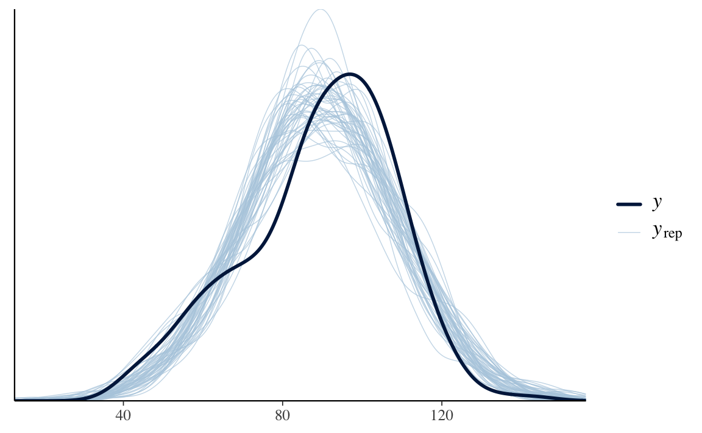
mcmc_trace(fit_ncp$draws(c("mu", "sigma")))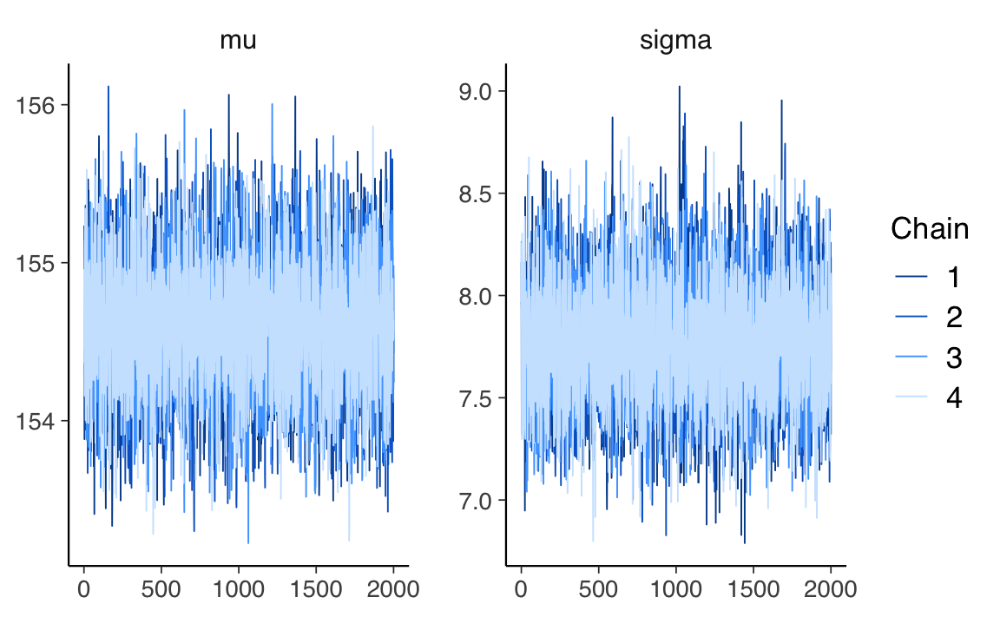
Otteniamo una sintesi delle distribuzioni a posteriori dei parametri:
fit_ncp$summary(c("mu", "sigma"))
#> # A tibble: 2 × 10
#> variable mean median sd mad q5 q95 rhat ess_bulk
#> <chr> <dbl> <dbl> <dbl> <dbl> <dbl> <dbl> <dbl> <dbl>
#> 1 mu 155. 155. 0.412 0.415 154. 155. 1.00 5880.
#> 2 sigma 7.76 7.75 0.292 0.291 7.30 8.26 1.00 7200.
#> # ℹ 1 more variable: ess_tail <dbl>I risultati sono molto simili a quelli ottenuti in precedenza.
59.5 Posterior predictive check
Uno dei vantaggi del toolkit bayesiano è che una volta ottenuta la distribuzione a posteriori congiunta dei parametri p(θ|Y) è possibile utilizzarla per generare le previsioni p(Ỹ). Matematicamente, questo può essere fatto calcolando:
\[ p(\tilde{y} \mid y) = \int p(\tilde{y} \mid \theta) p(\theta \mid y) d\theta. \]
Questa distribuzione è nota come distribuzione predittiva posteriore. È predittiva perché viene utilizzata per fare previsioni e posteriore perché è calcolata utilizzando la distribuzione posteriore. Quindi possiamo pensare a questa come la distribuzione dei dati futuri dati il modello e i dati osservati.
Utilizzando Stan è facile per ottenere campioni predittivi posteriori: non è necessario calcolare alcun integrale. Dobbiamo convertire l’oggetto creato dalla funzione sample() nel formato richesto da {bayesplot}. Estraiamo i dati prodotti dal modello y_rep e i dati osservati y:
# Extract posterior predictive samples for y_rep
y_rep <- fit_ncp$draws(variables = "y_rep", format = "draws_matrix")
# Extract observed data
y_obs <- stan_data$yConvertiamo y_rep in una matrice per compatibilità con {bayesplot}.
# Convert y_rep to a matrix
y_rep_matrix <- as.matrix(y_rep)Generiamo il posterior predictive chech plot:
# Posterior predictive check plot
set.seed(123)
selected_indices <- sample(nrow(y_rep_matrix), 50)
ppc_dens_overlay(y = y_obs, yrep = y_rep_matrix[selected_indices, ])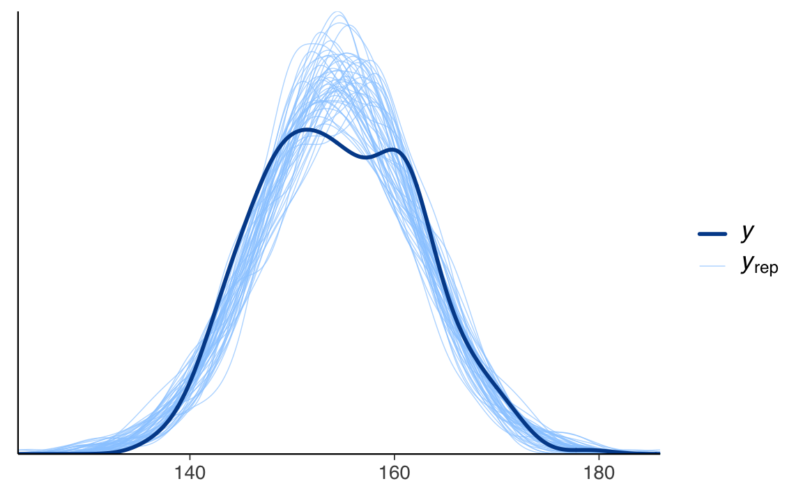
Un uso comune della distribuzione predittiva posteriore è quello di eseguire controlli predittivi posteriori. Questi sono un insieme di test che possono essere utilizzati per verificare se il modello è una buona rappresentazione dei dati. Nella figura, la linea nera rappresenta una KDE (Kernel Density Estimation) dei dati, mentre le linee grigie sono KDE calcolate da ciascuno dei 50 campioni predittivi posteriori. Le linee grigie riflettono l’incertezza associata alla distribuzione dei dati previsti.
Dato che il tracciato del KDE plot è contenuto nell’insieme di profili dei KDE plot dei campioni predittivi a posteriori, si può concludere che il modello utilizzato offre una rappresentazione adeguata dei dati ed è utile per la maggior parte delle analisi. Tuttavia, è importante considerare che potrebbero esistere altri modelli in grado di adattarsi meglio all’intero dataset. Esploreremo ora come poter sviluppare un modello alternativo.
59.6 Modello “robusto”
Non è necessario presupporre che i dati seguano una distribuzione gaussiana. Le lievi deviazioni dalla gaussianità possono essere considerate attraverso l’utilizzo della distribuzione t di Student, che è particolarmente utile quando queste deviazioni si manifestano nelle code della distribuzione, come sembra essere il caso in questa situazione. Pertanto, proponiamo di adottare un modello ‘robusto’, maggiormente adatto a gestire osservazioni che si discostano dalla normalità nelle code della distribuzione.
La distribuzione \(t\) di Student è caratterizzata dal parametro \(\nu\), noto come ‘gradi di libertà’. Quando \(\nu\) è pari o superiore a 30, la distribuzione t di Student diventa quasi indistinguibile da una distribuzione normale.
# Creare una funzione per generare dati di distribuzione t per un dato numero di gradi di libertà (nu)
generate_t_data <- function(nu, n = 1000) {
x <- seq(-5, 5, length.out = n)
y <- dt(x, df = nu)
data.frame(x = x, y = y, nu = as.factor(nu))
}
# Valori di nu
nu_values <- c(1, 2, 10, Inf) # Include infinito direttamente nella lista
# Genera i dati per ciascun nu
data_list <- lapply(nu_values, generate_t_data)
data <- do.call(rbind, data_list)
# Crea il grafico
p <- ggplot(data, aes(x = x, y = y, color = nu, group = nu)) +
geom_line() +
scale_color_manual(values = c("#F8766D", "#00BA38", "#619CFF", "black")) + # Personalizza i colori
labs(title = "Densità della Distribuzione t di Student",
x = "x",
y = "Densità",
color = "Gradi di libertà ν")
# Stampa il grafico
print(p)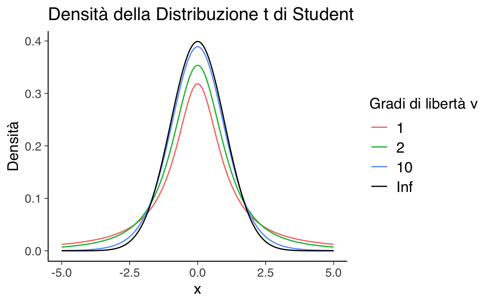
Tuttavia, le code della distribuzione t di Student risultano più pesanti rispetto a quelle della normale quando \(\nu\) è basso. Pertanto, proponiamo di assegnare a \(\nu\) una distribuzione a priori che concentri la maggior parte della sua massa su valori bassi, come ad esempio una distribuzione esponenziale con un parametro di rate pari a 1/30.
# Definisci il parametro di rate per la distribuzione esponenziale
rate <- 1 / 30
# Genera campioni dalla distribuzione esponenziale
samples <- rexp(10000, rate = rate)
# Crea l'istogramma dei campioni
p <- ggplot(data.frame(Values = samples), aes(x = Values)) +
geom_histogram(aes(y = ..density..), bins = 50, alpha = 0.75, fill = "lightgray") +
ggtitle("Exponential Distribution (λ = 1/30)") +
xlab("Values") +
ylab("Density") +
theme(legend.position = "none") +
geom_density(col = "black", size = 1) # Aggiunge una linea di densità per il confronto
#> Warning: Using `size` aesthetic for lines was deprecated in ggplot2 3.4.0.
#> ℹ Please use `linewidth` instead.
# Visualizza il grafico
print(p)
#> Warning: The dot-dot notation (`..density..`) was deprecated in ggplot2 3.4.0.
#> ℹ Please use `after_stat(density)` instead.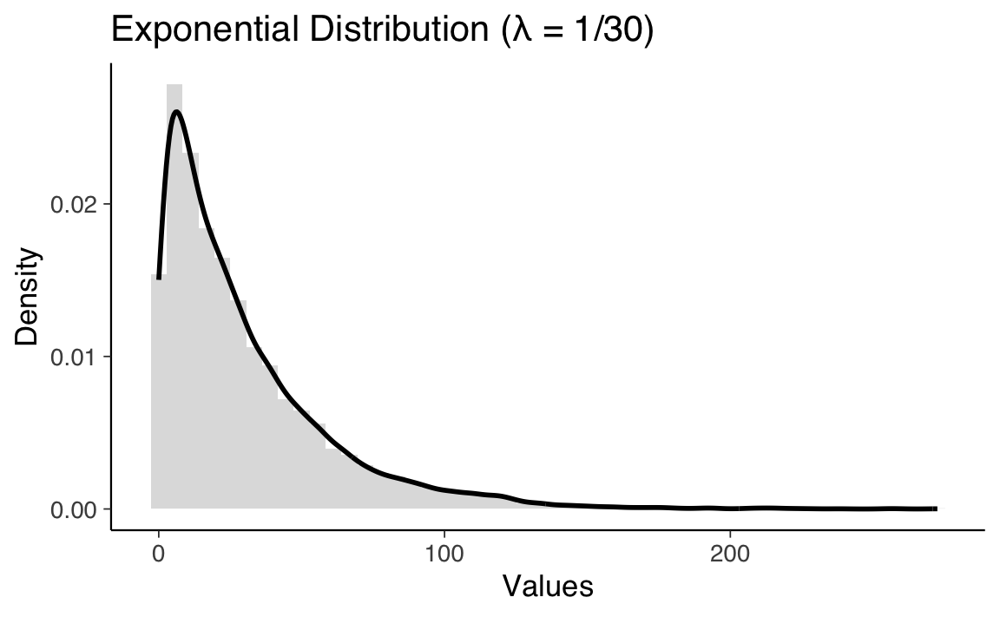
# Path to the Stan file
stan_file <- here::here("stan", "student-model.stan")
# Create a CmdStanModel object
mod_t <- cmdstan_model(stan_file)mod_t$print()
#> data {
#> int<lower=1> N; // Numero totale di prove
#> vector[N] y; // Punteggio in ciascuna prova
#> }
#> transformed data {
#> real y_mean = mean(y); // Media dei dati osservati
#> real y_sd = sd(y); // Deviazione standard dei dati osservati
#> }
#> parameters {
#> real mu_raw; // Parametro latente standardizzato per mu
#> real<lower=0> sigma_raw; // Parametro latente standardizzato per sigma
#> real<lower=1> nu; // Gradi di libertà per la distribuzione t di Student
#> }
#> transformed parameters {
#> real mu; // Media sulla scala originale
#> real<lower=0> sigma; // Deviazione standard sulla scala originale
#> mu = y_mean + y_sd * mu_raw;
#> sigma = y_sd * sigma_raw;
#> }
#> model {
#> // Distribuzioni a priori non centrate
#> mu_raw ~ normal(0, 1);
#> sigma_raw ~ normal(0, 1);
#> nu ~ exponential(1.0 / 30.0); // Prior esponenziale per i gradi di libertà
#> // Verosimiglianza
#> y ~ student_t(nu, mu, sigma);
#> }
#> generated quantities {
#> vector[N] y_rep;
#> for (n in 1:N) {
#> y_rep[n] = student_t_rng(nu, mu, sigma);
#> }
#> }Eseguiamo il campionamento MCMC:
fit_t <- mod_t$sample(
data = stan_data,
seed = 123,
chains = 4,
parallel_chains = 4,
iter_sampling = 2000,
iter_warmup = 2000,
show_messages = FALSE
)Esaminiamo la distribuzioni a posteriori e le tracce dei parametri \(\mu\) e \(\sigma\):
mcmc_hist(fit_t$draws(c("mu", "sigma")))
#> `stat_bin()` using `bins = 30`. Pick better value with `binwidth`.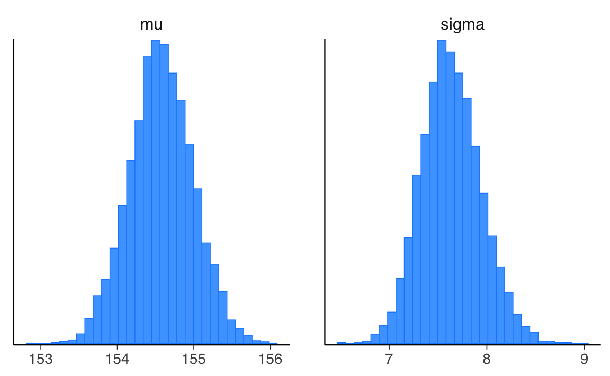
mcmc_trace(fit_t$draws(c("mu", "sigma")))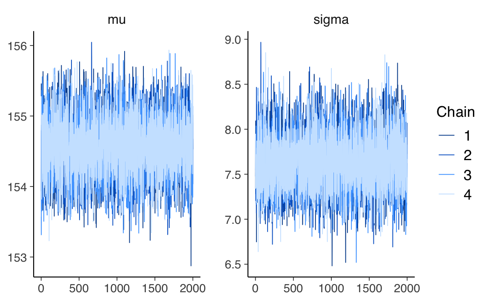
Generiamo la distribuzione predittiva a posteriori.
# Extract posterior predictive samples for y_rep
y_rep <- fit_t$draws(variables = "y_rep", format = "draws_matrix")
# Convert y_rep to a matrix
y_rep_matrix <- as.matrix(y_rep)
# Posterior predictive check plot
selected_indices <- sample(nrow(y_rep_matrix), 50)
ppc_dens_overlay(y = y_obs, yrep = y_rep_matrix[selected_indices, ])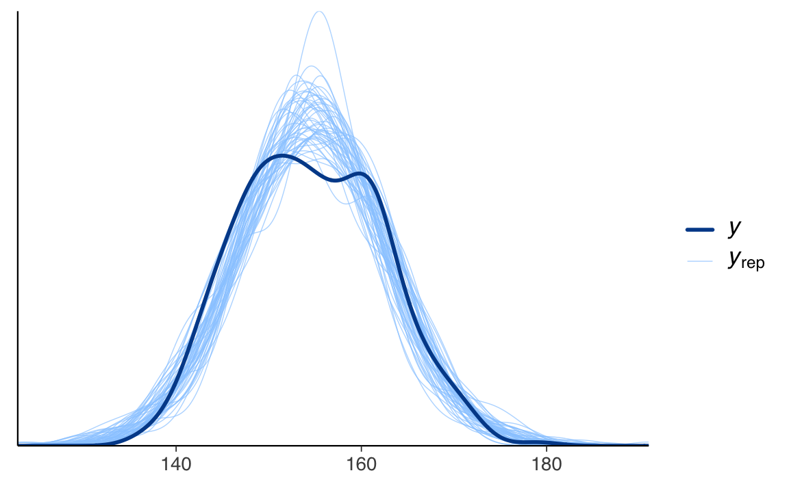
La figura illustra che la situazione è analoga a quella del caso gaussiano. Questo non è sorprendente, dato che i dati relativi all’altezza si distribuiscono in maniera gaussiana nella popolazione. Pertanto, l’impiego della distribuzione \(t\) di Student o della distribuzione normale producono risultati sostanzialmente equivalenti in questo contesto.
fit_t$summary(c("mu", "sigma"))
#> # A tibble: 2 × 10
#> variable mean median sd mad q5 q95 rhat ess_bulk
#> <chr> <dbl> <dbl> <dbl> <dbl> <dbl> <dbl> <dbl> <dbl>
#> 1 mu 155. 155. 0.413 0.409 154. 155. 1.00 7996.
#> 2 sigma 7.64 7.62 0.306 0.301 7.16 8.16 1.00 6869.
#> # ℹ 1 more variable: ess_tail <dbl>59.7 Riflessioni Conclusive
In questo capitolo abbiamo esplorato il metodo per calcolare l’intervallo di credibilità per la media di una variabile casuale normale utilizzando Stan. Inoltre, abbiamo illustrato come sia possibile ampliare l’inferenza sulla media utilizzando un modello robusto basato sulla distribuzione t di Student.
59.8 Esercizi
Esercizio 59.1 Utilizzando i dati dell’esempio sui bambini plusdotati discusso nella ?sec-grid-gauss, impiegare Stan per replicare i risultati ottenuti con il metodo basato su griglia.
Informazioni sull’Ambiente di Sviluppo
sessionInfo()
#> R version 4.4.2 (2024-10-31)
#> Platform: aarch64-apple-darwin20
#> Running under: macOS Sequoia 15.2
#>
#> Matrix products: default
#> BLAS: /Library/Frameworks/R.framework/Versions/4.4-arm64/Resources/lib/libRblas.0.dylib
#> LAPACK: /Library/Frameworks/R.framework/Versions/4.4-arm64/Resources/lib/libRlapack.dylib; LAPACK version 3.12.0
#>
#> locale:
#> [1] C/UTF-8/C/C/C/C
#>
#> time zone: Europe/Rome
#> tzcode source: internal
#>
#> attached base packages:
#> [1] grid stats graphics grDevices utils datasets
#> [7] methods base
#>
#> other attached packages:
#> [1] rstanarm_2.32.1 Rcpp_1.0.13-1 qs_0.27.2
#> [4] report_0.5.9 parameters_0.24.0 modelbased_0.8.9
#> [7] insight_1.0.0 effectsize_1.0.0 correlation_0.8.6
#> [10] bayestestR_0.15.0 easystats_0.7.3 posterior_1.6.0
#> [13] cmdstanr_0.8.1.9000 reshape2_1.4.4 HDInterval_0.2.4
#> [16] MASS_7.3-61 datawizard_0.13.0 performance_0.12.4
#> [19] ggbeeswarm_0.7.2 janitor_2.2.0 vcd_1.4-13
#> [22] viridis_0.6.5 viridisLite_0.4.2 pointblank_0.12.2
#> [25] haven_2.5.4 labelled_2.13.0 missForest_1.5
#> [28] mice_3.17.0 see_0.9.0 gridExtra_2.3
#> [31] patchwork_1.3.0 bayesplot_1.11.1 psych_2.4.6.26
#> [34] scales_1.3.0 markdown_1.13 knitr_1.49
#> [37] lubridate_1.9.4 forcats_1.0.0 stringr_1.5.1
#> [40] dplyr_1.1.4 purrr_1.0.2 readr_2.1.5
#> [43] tidyr_1.3.1 tibble_3.2.1 ggplot2_3.5.1
#> [46] tidyverse_2.0.0 rio_1.2.3 here_1.0.1
#>
#> loaded via a namespace (and not attached):
#> [1] shinythemes_1.2.0 splines_4.4.2 later_1.4.1
#> [4] R.oo_1.27.0 xts_0.14.1 rpart_4.1.23
#> [7] lifecycle_1.0.4 StanHeaders_2.32.10 rprojroot_2.0.4
#> [10] processx_3.8.4 lattice_0.22-6 crosstalk_1.2.1
#> [13] backports_1.5.0 magrittr_2.0.3 rmarkdown_2.29
#> [16] yaml_2.3.10 httpuv_1.6.15 doRNG_1.8.6
#> [19] pkgbuild_1.4.5 minqa_1.2.8 multcomp_1.4-26
#> [22] abind_1.4-8 R.utils_2.12.3 itertools_0.1-3
#> [25] nnet_7.3-19 TH.data_1.1-2 tensorA_0.36.2.1
#> [28] sandwich_3.1-1 inline_0.3.20 codetools_0.2-20
#> [31] DT_0.33 RApiSerialize_0.1.4 tidyselect_1.2.1
#> [34] shape_1.4.6.1 farver_2.1.2 lme4_1.1-35.5
#> [37] matrixStats_1.4.1 stats4_4.4.2 base64enc_0.1-3
#> [40] jsonlite_1.8.9 mitml_0.4-5 survival_3.7-0
#> [43] iterators_1.0.14 emmeans_1.10.6 foreach_1.5.2
#> [46] tools_4.4.2 glue_1.8.0 mnormt_2.1.1
#> [49] pan_1.9 xfun_0.49 distributional_0.5.0
#> [52] loo_2.8.0 withr_3.0.2 fastmap_1.2.0
#> [55] boot_1.3-31 fansi_1.0.6 shinyjs_2.1.0
#> [58] digest_0.6.37 timechange_0.3.0 R6_2.5.1
#> [61] mime_0.12 estimability_1.5.1 colorspace_2.1-1
#> [64] gtools_3.9.5 R.methodsS3_1.8.2 threejs_0.3.3
#> [67] utf8_1.2.4 generics_0.1.3 data.table_1.16.4
#> [70] blastula_0.3.5 htmlwidgets_1.6.4 pkgconfig_2.0.3
#> [73] dygraphs_1.1.1.6 gtable_0.3.6 lmtest_0.9-40
#> [76] htmltools_0.5.8.1 snakecase_0.11.1 rstudioapi_0.17.1
#> [79] tzdb_0.4.0 curl_6.0.1 coda_0.19-4.1
#> [82] checkmate_2.3.2 nlme_3.1-166 nloptr_2.1.1
#> [85] zoo_1.8-12 parallel_4.4.2 miniUI_0.1.1.1
#> [88] vipor_0.4.7 pillar_1.9.0 vctrs_0.6.5
#> [91] shinystan_2.6.0 promises_1.3.2 randomForest_4.7-1.2
#> [94] stringfish_0.16.0 jomo_2.7-6 xtable_1.8-4
#> [97] beeswarm_0.4.0 evaluate_1.0.1 mvtnorm_1.3-2
#> [100] cli_3.6.3 compiler_4.4.2 rlang_1.1.4
#> [103] rngtools_1.5.2 rstantools_2.4.0 labeling_0.4.3
#> [106] ps_1.8.1 plyr_1.8.9 stringi_1.8.4
#> [109] rstan_2.32.6 QuickJSR_1.4.0 munsell_0.5.1
#> [112] colourpicker_1.3.0 pacman_0.5.1 V8_6.0.0
#> [115] glmnet_4.1-8 Matrix_1.7-1 hms_1.1.3
#> [118] shiny_1.10.0 igraph_2.1.2 broom_1.0.7
#> [121] RcppParallel_5.1.9Bibliografia
McElreath, R. (2020). Statistical rethinking: A Bayesian course with examples in R and Stan (2nd Edition). CRC Press.